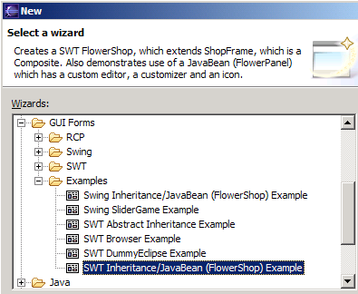

Changing
the class of a GUI component
Let's say you either
- have added a JRadioButton and then you decide it should be a
JCheckbox instead
- have added a Composite, filled it with other components, and then
decide it should be a Group instead
These cases can be solved by
the "Change Class..." option in the right-click context
menu. Simply choose
that option and type "JCheckbox" or "Group" into the Dialog that will
appear, and the change should occur and be visible in the GUI
editor.
Note that the class you change to must extend the appropriate
Object, and have an appropriate constructor:
For SWT - the class must be an extension of an SWT Control and have a constructor with (Composite, int)
parameters.
For Swing - the class
must extend JComponent and must have a constructor with *no* parameters.
Adding
custom classes (and JavaBeans)
Let's say you want
to add a separate GUI component which you have just built
(let's say it's called DateChooser, an extension of a Composite which
has components which let you select a date) to the GUI you are
currently building. In the component palette, choose the "Custom" tab
and click the "bean" icon. Then click on the form where you want the
component to go. A dialog will open into which you type the name of
your custom class, then the usual creation dialog will open, and your
component will then be placed on the form. Note that your component
must extend javax.swing.JComponent if it is to be added to a Swing GUI,
and org.eclipse.swt.widgets.Control for addition to an SWT GUI.
If you add a JavaBean, and you have made a Customizer for it, then
double-clicking on the bean in Jigloo will open the Customizer. If your
bean has special property objects, which have constructors with
parameters, then you need to create a file called ".constructors" and
place it in the root folder for your project. The file should have one
line for each special property, with the full class name, then the
property names of each of the parameters in the constructor, separated
by semi-colons. Eg, for a my.objects.MyObject property, with a
constructor MyObject(String name, Color color) and properties "name"
and "color" (ie, methods getName() and getColor()), then the required
line would be "my.objects.MyObject;name;color".
Note that the class you add must extend
the appropriate Object, and have an appropriate constructor:
For SWT - the class must be an extension of an SWT Control and have a constructor with (Composite, int)
parameters.
For Swing - the class
must extend JComponent and must have a constructor with *no* parameters.
To learn about accessing publically-accessible fields of custom classes, read the section on inheritance.
Extracting
parts of GUI classes
Let's say you have
built a form, then decide that part of it would be useful in another
form. You can either just copy the part, and paste it into your other
form, or you can choose the "Extract" context-menu option. First,
select the part which you wish to extract (it might be a JPanel, for
instance, filled with other components) and choose the "Extract to new
form" option. You will be prompted for a name, and then the part will
be saved as a new java class, which you can then edit and include in
other forms if needed.
Previewing the
GUI
To preview the behaviour of your GUI
without actually running the
generated code, hit the "Preview" button at the
top of the
"Outline" view (). This will pop up a Shell or JFrame with
a copy of your GUI in
which all the menus, combo-boxes etc will be active.
Running the Java
Code
The generated Java code can be run in the usual way by selecting
the java file in the Package Explorer and choosing the "Run
As...->Java Application" option from the main Eclipse menu.
A quicker way is to hit the "Run" button on the Outline view ().
After a GUI has been run once, a launch configuration is created and
saved, and can be accessed from the "Run" button in the Eclipse main
toolbar.
Toggling between
SWT and Swing
To convert a GUI from Swing to SWT, or from SWT to Swing, click on the
"Toggle" button() at the top of the Outline panel.
For all but the simplest of GUIs the change will be irreversible
because of difficulties in converting layouts etc.
Viewing Swing/SWT
Javadoc
To view the Swing or SWT Javadoc for a GUI component (or it's layout,
if one is set for it) you can right-click on it and choose the "Show
Javadoc for..." option.
The Swing javadoc is automatically mounted, but you will need to mount
the SWT javadoc yourself in the following way:
- Find the
eclipse\plugins\org.eclipse.platform.doc.isv_2.1.0\doc.zip file and
unzip it to a fresh folder.
- Right-click on the "swt.jar" node under your project, and choose
the "Properties" option.
- In the "Properties" dialog, choose the "Javadoc Location" item,
and browse to the "reference/api" folder in the unzipped doc folder
(from step 1).
- Hit "OK".
Examples
You can quickly create some examples using the Eclipse "New" wizard
(you can start it from the Eclipse File->New->Other menu option,
or hit Ctrl+N).
Under "GUI Forms" there is an "Examples" section - selecting one of the
examples will generate the class or classes in their own Java
package (or you can specify your own location). Some of the examples will generate multiple files, and will
also generate folders with any icons they might use. They are a quick
and easy way to generate some files to experiment with, and a good
demonstration of some GUI techniques.
